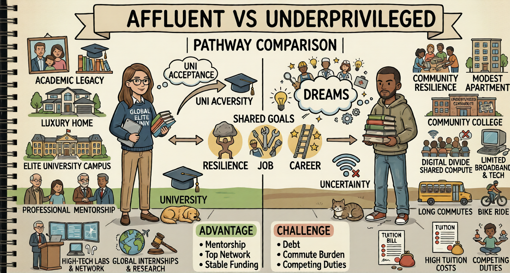
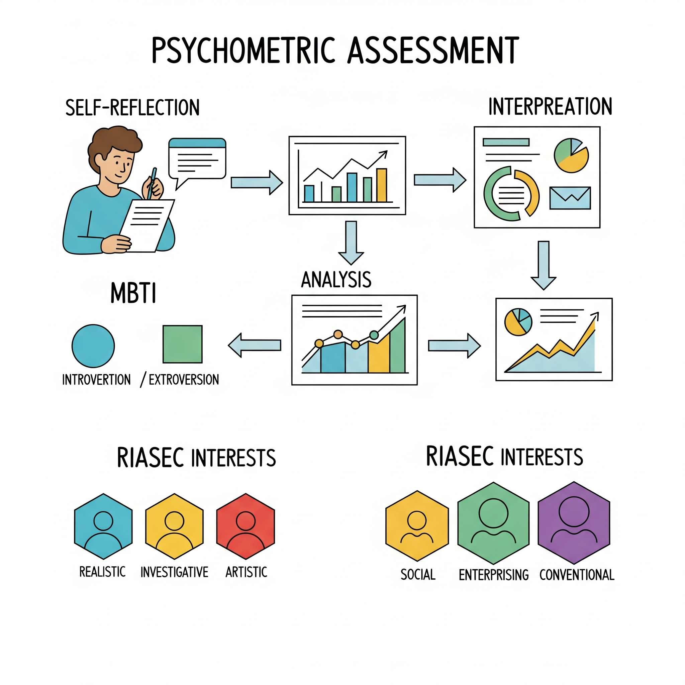

Who Is the Most Deserving Candidate for Psychometric-Based Career Counselling?
A Brilliant Student from an Affluent Class or a Weak Student from a Poor Family?
By Vitae Careers Team | March 2026 | 7 min read

Career counselling has evolved far beyond marksheets, ranks, and social perceptions. With the advent of psychometric-based career counselling, students today can discover their aptitude, personality traits, interests, and work styles in a scientific manner. Yet an important question persists in the Indian education ecosystem: Who truly deserves psychometric career counselling more—a brilliant student from an affluent background, or a weak academic performer from a poor family? The honest answer may surprise many.
Understanding Psychometric-Based Career Counselling
Psychometric career counselling is not about judging intelligence or predicting success based on grades. Instead, it focuses on:
- Cognitive abilities and aptitudes
- Personality traits and behavioral tendencies
- Interest patterns and motivation
- Learning styles and work preferences
Its purpose is alignment, not labeling—helping students choose careers that suit who they are, not who society expects them to be.
The Brilliant Student from an Affluent Class
Advantages
- Access to quality education and resources
- Exposure to multiple career options
- Financial security to experiment with choices
- Parental and social support systems
Challenges Often Ignored
Despite advantages, many brilliant students face:
- Parental pressure to follow "prestigious" careers (engineering, medicine, IAS)
- Identity confusion due to too many options
- Career decisions driven by status, not suitability
- Mental stress, burnout, and fear of failure
Does This Student Need Psychometric Counselling? Yes—absolutely. But often for clarity and validation, not survival. Psychometric counselling helps such students to:
- Understand whether their brilliance aligns with their chosen field
- Avoid wrong career choices made under social pressure
- Make informed decisions among multiple high-potential paths
The Weak Student from a Poor Family
Harsh Realities
This student often faces:
- Limited educational facilities
- Poor schooling and learning gaps
- Financial constraints
- Early labeling as "average" or "failure"
- Pressure to earn early rather than study
Hidden Strengths
Academic weakness does not mean lack of potential. Many such students possess:
- Strong practical intelligence
- Creativity, resilience, and adaptability
- Hands-on skills and entrepreneurial ability
- Untapped talents suppressed by circumstances
Why Psychometric Counselling Is Critical Here: For this student, psychometric counselling can be life-changing. It helps to:
- Discover strengths beyond textbooks
- Break the myth that "low marks = low future"
- Identify vocational, skill-based, or alternative careers
- Prevent dropouts, frustration, and misdirected effort
- Create hope, direction, and dignity
For economically weaker students, psychometric counselling is not a luxury—it is empowerment.
So, Who Is More Deserving?
The Honest Answer: Both but Not Equally.
| Aspect |
Brilliant affluent student |
Weak poor student |
| Access to guidance |
Already high |
Extremely limited |
| Risk of wrong choice |
Moderate |
Very high |
| Impact of counselling |
Helpful |
Transformational |
| Social mobility |
Limited |
Huge |
Psychometric counselling benefits both but it is far more critical for students from poor families with academic struggles. For them, it can mean:
- The difference between dropout and direction
- The difference between labor and livelihood
- The difference between inherited poverty and self-earned progress
A Shift in Mindset Is Needed
In India, career counselling is still perceived as:
- A premium service for elite schools
- A corrective tool for "confused toppers"
This mindset must change. The students who need career counselling the most are often the ones who receive it the least.
Conclusion: Deservingness Is About Impact, Not Intelligence
Psychometric-based career counselling should not be reserved for:
- High scorers
- English-medium schools
- Urban, affluent families
Its true power lies in reaching students whose potential is hidden by poverty, weak schooling, and social disadvantage. A brilliant student may choose better. But a weak, underprivileged student—with the right guidance—can change generations.
Final Thought: Career counselling should not be a privilege of the powerful, but a right of the potential.
Why Career Counselling is Important in Today's Era
By Vitae Careers Team | June 06, 2025 | 8 min read
In a rapidly evolving world, choosing a career path has become more complex than ever before. Gone are the days when a few traditional options dominated the landscape. Today, new industries emerge, existing ones transform, and the skills required for success are in constant flux. This dynamic environment makes professional career counselling not just beneficial, but truly essential for individuals navigating their future.
Navigating the Maze of Opportunities
The sheer volume of career options available can be overwhelming. From artificial intelligence and data science to sustainable energy and digital marketing, the choices are vast. Without proper guidance, students and young professionals often feel lost, making decisions based on limited information, peer pressure, or parental expectations rather than on their true aptitudes and interests.
Career counselors are trained experts who possess in-depth knowledge of various industries, job roles, educational pathways, and future trends. They help individuals map out the intricate web of opportunities, ensuring they don't miss out on fields where they could genuinely excel and find satisfaction.
Understanding Self for Informed Decisions
One of the core pillars of effective career counselling is self-assessment. Many individuals are unaware of their innate talents, personality traits, strengths, and weaknesses. Psychometric assessments, a key tool in modern career counselling, provide scientific insights into these aspects. These assessments help in:
- Identifying Core Interests: What truly excites and motivates an individual.
- Uncovering Aptitudes: Natural abilities that can be honed into valuable skills.
- Understanding Personality: How one's personality type aligns with different work environments and roles.
- Pinpointing Values: What truly matters in a career, beyond just salary.
This deep dive into self-awareness empowers individuals to make informed decisions that resonate with who they are, leading to greater job satisfaction and long-term career success.
Bridging the Skill Gap and Future-Proofing Careers
The global job market is highly competitive, and employers seek candidates with specific, in-demand skills. Career counselors don't just help you choose a path; they also advise on the necessary qualifications, certifications, and skills development needed to thrive in that path. They can highlight emerging skills and industries, helping individuals to future-proof their careers against technological advancements and economic shifts.
Furthermore, they can provide strategies for resume building, interview preparation, and networking, equipping individuals with the practical tools needed to secure their desired positions.
Addressing Parental and Societal Pressures
In many societies, parental expectations and societal norms play a significant role in career choices. This can often lead to individuals pursuing careers that do not align with their genuine interests or abilities, resulting in dissatisfaction, stress, and underperformance. Career counselling offers a neutral ground where professional guidance can help bridge the gap between aspirations and reality, facilitating healthier conversations between parents and children about future paths.
Conclusion
In conclusion, professional career counselling is no longer a luxury but a necessity in today’s complex and dynamic world. It offers invaluable guidance, fosters self-awareness, helps in skill development, and acts as a crucial bridge between an individual's potential and the vast opportunities available. Investing in career counselling means investing in a future of clarity, purpose, and professional fulfillment.
Don't leave your career to chance. Seek expert guidance to truly thrive!
The Importance of Psychometric Assessment in Career Counselling
By Vitae Careers Team | June 07, 2025 | 10 min read

In the intricate journey of career exploration, self-awareness is paramount. While introspection and discussions can provide valuable insights, they often scratch only the surface. This is where psychometric assessments emerge as an indispensable tool in modern career counselling. These scientifically designed evaluations delve deeper into an individual's innate characteristics, providing objective data that empowers both the counselor and the candidate to make truly informed career decisions.
What are Psychometric Assessments?
Psychometric assessments are standardized tests designed to measure an individual's cognitive abilities, personality traits, interests, values, and aptitudes. They are developed by psychologists and psychometricians to ensure validity (measuring what they claim to measure) and reliability (producing consistent results).
Common types of psychometric assessments used in career counselling include:
- Aptitude Tests: Measure specific abilities like numerical reasoning, verbal reasoning, logical reasoning, and spatial awareness.
- Personality Inventories: Evaluate behavioral styles, preferences, and how an individual interacts with the world (e.g., introversion/extraversion, conscientiousness).
- Interest Inventories: Identify areas of professional interest and preferences for different types of work activities.
- Values Assessments: Determine what motivates an individual in a work setting (e.g., security, creativity, leadership, social impact).
Why are They Crucial for Career Counselling?
1. Objectivity and Accuracy:
Unlike subjective opinions or self-reported biases, psychometric assessments provide objective data. They offer a standardized measure of an individual's traits, reducing the chances of misjudgment based on limited observation or personal biases of the counselor or the candidate.
2. Deeper Self-Understanding:
Many individuals have blind spots about their own strengths, weaknesses, or true interests. An assessment can reveal hidden talents or preferences they might not have consciously acknowledged. It provides a comprehensive profile that helps candidates understand "who they are" from a psychological standpoint, which is crucial for finding a career that genuinely aligns with their inner self.
3. Validation and Confidence:
For candidates who are unsure about their career choices, psychometric results can provide validation. If their interests or aptitudes align with a particular field, the assessment results can boost their confidence in pursuing that path. Conversely, it can also gently steer them away from unsuitable paths, saving time and resources.
4. Informed Decision-Making:
By offering a data-driven approach, assessments enable career counselors to provide highly personalized and evidence-based recommendations. This moves career planning beyond mere speculation to a strategic, well-informed decision-making process. It helps answer critical questions like: "Am I better suited for a creative role or an analytical one?" or "Will I thrive in a collaborative environment or an independent one?"
5. Bridging Gaps in Awareness:
Assessments can highlight mismatches between perceived strengths and actual aptitudes, or between desired careers and underlying interests. This helps in identifying areas for development or exploring alternative career avenues that were previously overlooked.
6. Long-Term Career Satisfaction:
When career choices are made in alignment with an individual's natural predispositions and motivators, the likelihood of long-term job satisfaction, engagement, and success significantly increases. Psychometric assessments lay the groundwork for building a fulfilling career, not just a job.
Conclusion
In today's complex career landscape, psychometric assessment acts as a powerful compass, guiding individuals through the myriad of options. It transforms career counselling from a guesswork into a precise, scientific process, empowering individuals to navigate their professional journey with clarity, confidence, and purpose. For anyone serious about making a well-informed career choice, understanding the insights from a psychometric assessment is an invaluable first step.
New-Age Global Careers for STEM Students
By Director, Vitae Career Enterprises
In today's interconnected world, the landscape of careers for STEM (Science, Technology, Engineering, and Mathematics) students is rapidly evolving. No longer limited to traditional engineering or medical professions, students now have access to a spectrum of new-age careers that blend innovation, creativity, and global opportunities. At Vitae Career Enterprises, we are committed to guiding ambitious minds toward meaningful, future-ready professions.
Why STEM is More Powerful Than Ever
The world is undergoing a digital transformation, with industries such as artificial intelligence, biotechnology, climate science, robotics, and space exploration at the forefront. STEM students are the architects of this change, uniquely positioned to lead global solutions in health, sustainability, and technology.
Emerging Global Career Opportunities in STEM
Here are some of the most promising global career paths STEM students should explore:
- Artificial Intelligence & Machine Learning Specialist: AI is transforming industries from finance to healthcare. Skills needed include programming (Python, R), statistics, and deep learning. Global employers include Google DeepMind, OpenAI, Meta, NVIDIA, and Siemens.
- Data Scientist / Big Data Analyst: Data is the new oil, and businesses are desperate for insights. Skills needed are data visualization, Python, SQL, and machine learning. Top destinations for this career are the USA, UK, Germany, Canada, and Singapore.
- Robotics Engineer: Applications include manufacturing, defense, and healthcare (robotic surgery). Emerging markets for this field are Japan, South Korea, Germany, USA, and India.
- Biotechnology Researcher: The COVID-19 vaccines showed the power of biotech. Opportunities include genetic engineering, pharma R&D, and synthetic biology. Top global firms are Pfizer, Genentech, Moderna, Biocon, and GSK.
- Environmental Scientist / Climate Technologist: Climate change demands immediate and innovative solutions. Careers include carbon capture, renewable energy, and sustainable engineering. Global bodies hiring in this field include the UN, IPCC, Tesla, Vestas, and the Indian Green Building Council.
- Space Science & Aerospace Engineering: There has been a boom with the rise of private space ventures like SpaceX and ISRO's global acclaim. Global hubs are the USA, France, UAE, India, and Australia.
- Cybersecurity Expert: With digital threats increasing, cyber defense is a top priority. Careers include ethical hacking, cyber law, and digital forensics. Organizations that hire cybersecurity experts are Interpol, NSA, Infosys, Norton, and EY.
- Bioinformatics and Computational Biology: This field is a fusion of biology and technology, used in genomics and precision medicine. It is ideal for students interested in biology and coding.
Skills That Matter in the Global Market
Regardless of the field, these cross-functional skills will boost global employability:
- Critical thinking & innovation
- Programming and analytical skills
- Communication in multicultural settings
- Problem-solving in real-world scenarios
- Adaptability to technological shifts
Educational Pathways & Global Institutions
To tap into these careers, students can aim for:
- Top Global Universities: MIT, Stanford, ETH Zurich, NUS, IITS.
- Global Internships: CERN, Google Summer of Code, NASA.
- International Certifications: Coursera, edX, Udemy, Skill-Lync, DataCamp.
How Vitae Career Enterprises Can Help
At Vitae Career Enterprises, we offer Career Counselling based on Psychometric career Assessment tests to discover hidden potentials, as we believe careers should be chosen with clarity, not pressure. Our mission is to ensure every STEM student is equipped to compete globally, backed by passion and purpose.
Final Thought
The future belongs to those who are technologically fluent, creatively confident, and globally conscious. With the right guidance, STEM students can lead the next industrial and ecological revolutions.
The Importance of Career Counselling in Today's Era
By Director, Vitae Career Enterprises
Career counseling has a rich and evolving history. Frank Parsons is known as the father of career counseling, and in 1908, he wrote the book "Choosing a Vocation" and established the first counseling center in Boston, USA. Broadly, career counseling is a process through which we understand an individual and identify careers where they are best suited.
In India, teachers and school administrations usually advise students on stream selection based on their past academic performance. However, psychological research conducted over the last century clearly shows that success in a career is not solely dependent on academic performance. It also depends on personality traits, interests, values, learning styles, and emotional quotient.
Traditional Method of Career Selection
- Academic Performance-Based Selection: Traditionally, a student's stream is chosen based on marks obtained in classes 9 and 10, especially in subjects like Science, Mathematics, English, and Social Science.
- Consistent Scores: Consistently high marks in Science and Mathematics often lead to a recommendation for the Science stream, while high marks in Social Science lead to the recommendation of the Arts stream.
- Interest and Participation: Teachers also consider students' interests and participation in educational activities like asking questions, participating in debates, hands-on experiments, and lab projects.
- Extracurricular Interests: A student's engagement in science fairs, literary clubs, and school festivals is also considered.
- Aptitude: Aptitude is a factor as well. Logical reasoning suggests a career in Science or Commerce, creativity and expression suggest the Arts, and practical thinking suggests Commerce or vocational courses.
- Teachers' Observations: Teachers also consider a student's discipline, attention span, group work, communication, and decision-making ability.
- Stress Handling: The ability to handle high-stress subjects might suggest Science, while a preference for low-stress subjects might suggest Social Science.
- Career Goal & Parents' Input: Inputs from Parent Teacher Meetings (PTMs) and a student's aspirations are considered. Parent's expectations are also factored in.
- Resource Availability: The availability of faculty, infrastructure, and alumni success stories also play a role in the traditional method.
Limitations of the Traditional Method & Its Impact
The traditional approach is prone to personal bias from the teacher or mentor. Recommendations are often based on subjective judgment rather than scientific analysis, which can reduce the accuracy of the guidance. In today's world, where thousands of career options exist, relying on the traditional approach is like navigating a maze. In such a situation, the importance of scientific and standardized psychometric assessment-based stream selection has increased.
Psychometric Assessment-Based Career Counseling Method
In this method, the student is better understood through scientific and standardized tools, which involve the following tests:
- Personality Test: Using certified tools like the MBTI or Big Five Test to understand core personality traits.
- Interest Test: Using John Holland's RIASEC Model to assess career interests.
- Learning Style & Values Test: This identifies the best learning style and the values that motivate the individual.
- Aptitude and Skills Test: This tests logical reasoning, numerical ability, skills, and reasoning capacity to recommend suitable careers.
Based on the results of these tests, experts give unbiased recommendations for suitable subjects, careers aligned with personality, aptitude, and interests, and professionally viable, data-backed long-term career plans for clear decision-making.
Psychometric assessment-based counseling is widely accepted, with 75% of the top 100 businesses listed in the UK's Times Magazine and companies in the US Fortune 500 using these tests for candidate selection globally. These tools have transformed career counseling from a guess-based process into a precise and scientific one, allowing individuals to plan their professional journey with clarity, confidence, and purpose.
A career counselor should consider both the traditional method and the psychometric assessment-based method when giving recommendations for the best results.